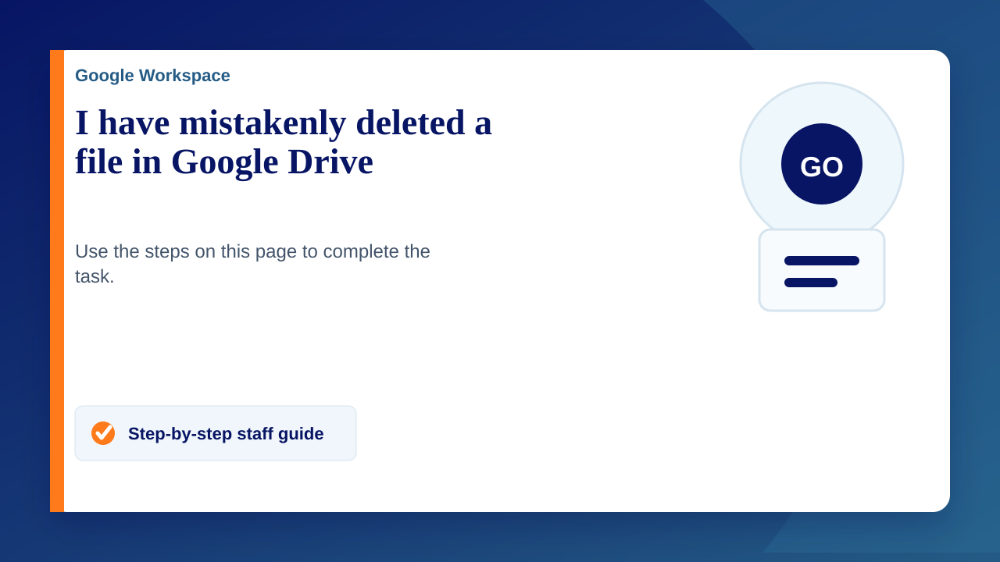

Restore from your Trash
- On a computer, go to drive.Google.com/drive/trash.
- Right-click the file you'd like to recover.
- Click Restore.
You can't find something & you don't think you deleted it
Check the activity panel
- On a computer, go to drive.Google.com.
- On the left, click My Drive.
- At the top right, click Info Info.
- Scroll down and look for your file.
Try an advanced search
- On a computer, go to drive.Google.com.
- At the top, go to the search bar and click the Down arrow.
- Use the advanced search options to find your file, like "type:spreadsheets."
If the steps above didn't help, consider these special cases:
If you created the file
If you created a file in Drive and can't find it, it may be orphaned. An orphaned file might have lost all of its parent folders. The file still exists but is harder to find.
How files lose their folder
- You create a file in someone else's folder and they delete that folder. The file isn't deleted. It's automatically moved to your My Drive. (Important: Only you can delete the files you own.)
- You share a folder with someone and they remove your file from the folder. The file isn't deleted, it's automatically moved to your My Drive.
Find your orphaned files
- In the Drive search field, enter: is:unorganized owner:me
- When you find the file, move it to a folder in My Drive so it’s easier to find next time.